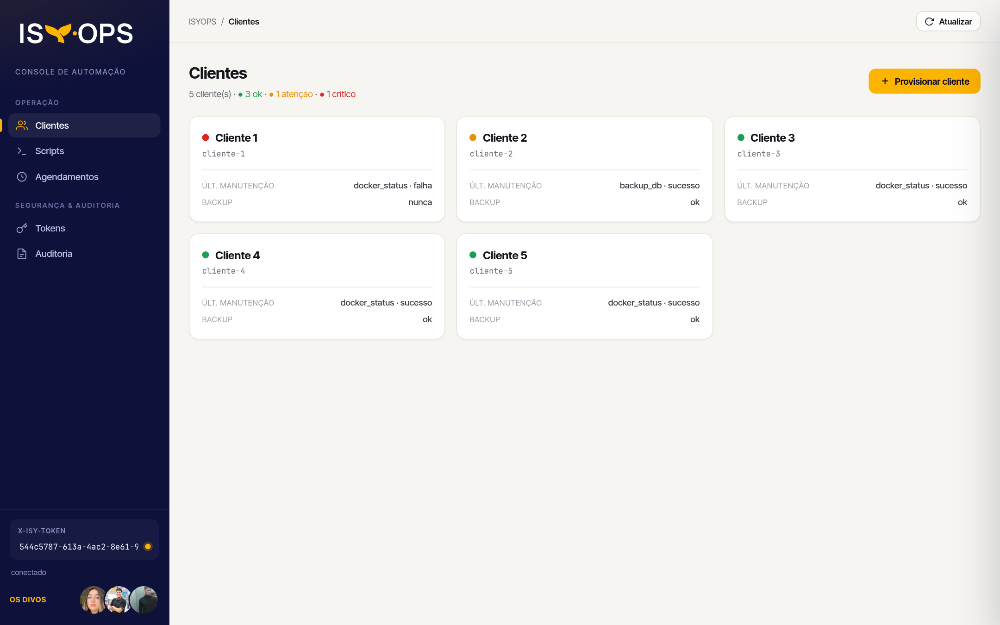

O ISYOPS é um painel central multi-cliente que executa a manutenção dos servidores dos restaurantes parceiros da Isy.One: roda scripts, gerencia e faz deploy de containers e monitora a saúde da frota com Prometheus e Grafana. Ninguém precisa abrir SSH.
Na demo, o painel publicado na Railway opera um servidor de cliente real: uma instância
AWS EC2 t3.micro (2 vCPU, 1 GiB de RAM) preparada com deploy/client-box/provision.sh.
Toda a manutenção chega até ela por SSH.
isyoneO provisionar sobe na EC2 os containers db (Postgres), odoo e ifood-agent do novo cliente.
O docker_status devolve o docker ps da instância, com a linha [remoto isyone@<ip>:22].
CPU, memória, disco e uptime do host e de cada container reagem quando o update_agent ou o cleanup_logs rodam.
O suporte mantém centenas de servidores Linux de restaurantes (Agente de Impressão do iFood). Atualizar o agente, limpar logs de cupons ou checar os containers do banco exigia entrar por SSH e rodar scripts na mão. Era lento e não deixava registro de quem rodou o quê, quando, com quais parâmetros e com qual resultado.
Cada restaurante é um tenant com token próprio. Os scripts rodam por requisição autenticada, só dentro do ambiente daquele cliente. Cada execução vira um evento de auditoria imutável, e a saúde do cliente (verde, amarelo ou vermelho) é calculada a partir desse histórico.
Tudo o que o desafio pedia, mais agendamento, alertas e cadastro self-service.
Execução por requisição autenticada, local ou no servidor do cliente via SSH, com parâmetros tipados e timeout.
Token próprio e lista de scripts permitidos por tenant. O token de um cliente nunca alcança outro.
Status, restart, stop e logs (docker_ctl), além de criar e fazer o deploy da stack de um cliente novo (provisionar).
cAdvisor e node-exporter coletam métricas dos containers e do host, e o Grafana mostra a saúde da frota Docker.
Event sourcing: horário, script, parâmetros, status, exit code e duração de cada execução.
Agendamento recorrente por cliente e notificações no Slack para falhas, sucessos e frota crítica.

Backend em camadas (rota → service → repository → core), empacotado numa imagem Docker enxuta e publicado na Railway.
HTTP com o header X-Isy-Token, de admin ou de cliente.
Valida o token, a lista de scripts do tenant, os parâmetros e o caminho do script.
shell=False e timeout. Com ssh_host, roda no servidor real do cliente.
tenants, scripts, bindings e events (auditoria append-only).
cAdvisor e
node-exporter são raspados por um OTel Collector, que envia (remote-write) as
métricas para o Prometheus central. O Grafana já sobe com o dashboard
“Saúde da Frota Docker” provisionado.Nenhuma string do request vira comando. Só rodam scripts cadastrados, ativos e vinculados ao cliente.
compare_digest.shell=False. No SSH, o charset dos parâmetros é validado.# API + console com dados de demonstração git clone https://github.com/lumiguelx/hackathon-isy.one && cd hackathon-isy.one docker compose up --build # console: http://localhost:8000/ui # API docs: http://localhost:8000/docs (ou o Swagger desta página) # Observabilidade (cAdvisor, node-exporter, OTel, Prometheus, Grafana) cd deploy/observability && docker compose up -d # Grafana: http://localhost:3000